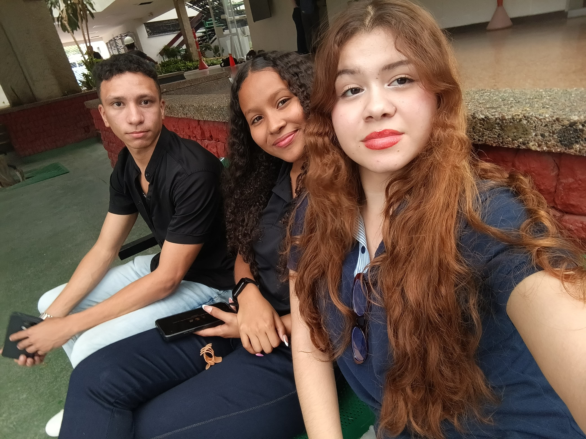

Hay personas que saben mirar.
Que ven lo que los demás dejan pasar.
Que tienen la extraña habilidad
de detener el tiempo.
I · V
.
espera.
esto no debería estar aquí.
hay un archivo más.
uno que no estaba en el rollo.

No eres quien detiene el tiempo.
Eres el momento que nadie quiere que pase.
Hoy no es solo tu cumpleaños.
Es el día en que el mundo cumple un año más contigo en él.
gracias por existir en voz alta.
· esta experiencia fue hecha para ti, solo para ti ·
rollo nº ∞ · exposición perfecta